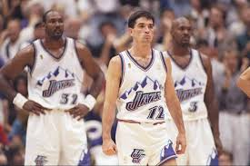
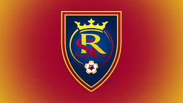
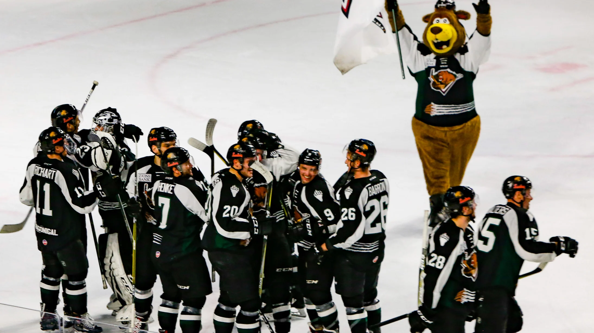
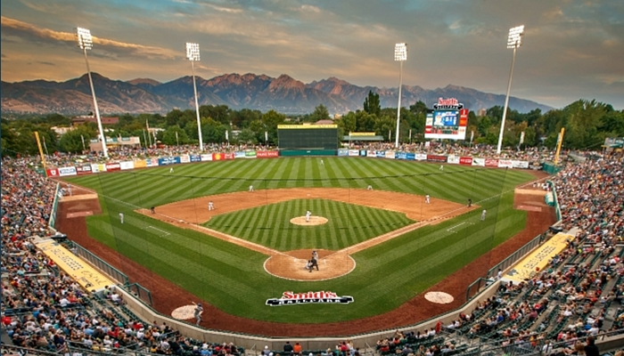

Sports Teams in Utah
Utah is a small market area which means we don't the most famous athletes and the most popular franchises. However, we do draw the most intense sports fans. Those we are born and grow up in Utah develop a strong love and connection with the teams. Both professional, amatuer, and college teams receive passion, dedication, and competitive nature from their fans.
Basketball
The Utah Jazz are an American professional basketball team based in Salt Lake City. The Jazz compete in the National Basketball Association (NBA) as a member of the league's Western Conference, Northwest Division. Since 1991, the team has played its home games at Vivint Smart Home Arena. The franchise began play as an expansion team in 1974 as the New Orleans Jazz (as a tribute to New Orleans' history of originating Jazz music). The Jazz moved to Salt Lake City in 1979. During the late 1980s, John Stockton and Karl Malone arose as the franchise players for the team, and formed one of the most famed point guard–power forward duos in NBA history. Led by coach Jerry Sloan, who took over from Frank Layden in 1988, they became one of the powerhouse teams of the 1990s, culminating in two NBA Finals appearances in 1997 and 1998, where they lost both times to the Chicago Bulls, led by Michael Jordan.
Soccer
Real Salt Lake, also known as RSL, is an American professional soccer franchise that competes as a member club of Major League Soccer (MLS) in the Western Conference. RSL began play in 2005 as an expansion team of the league. The club was founded in 2004 when the club's first owner and founder was awarded an expansion berth in Major League Soccer. The club plays its home games at Rio Tinto Stadium, a soccer-specific stadium located in the Salt Lake City suburb of Sandy, Utah, which they share with their sister team, Utah Royals FC. Before moving to Rio Tinto, RSL played home games at Rice-Eccles Stadium, located on the campus of the University of Utah, from 2005–2007. The team is currently led by interim head coach Freddy Juarez. In domestic soccer, Real Salt Lake won the 2009 MLS Cup and they finished runners-up in the Supporters Shield in 2010, and the 2013 edition of the U.S. Open Cup. They were also runners-up in the 2013 MLS Cup. The franchise regional success to date was in the 2010–11 CONCACAF Champions League, where RSL finished runners-up in the tournament becoming the first American club, since the CONCACAF Champions League format was introduced in 2008, to advance to the final stage of the tournament. Their fully owned USL affiliate, Real Monarchs, won the 2019 USL Championship, the second division title in American soccer
Hockey
The Utah Grizzlies are a professional ice hockey team in the ECHL. They play their home games at the Maverik Center in West Valley City, Utah. Following the 2017–18 season, the Grizzlies missed the post-season for the first time in 11 years. At that time, their ECHL rival, the Colorado Eagles, joined the American Hockey League as an affiliate of the Colorado Avalanche after previously serving as the Avalanche affiliate in the ECHL. The Grizzlies ended their agreement with the Ducks and affiliated with the Avalanche, their closest geographical NHL club.
Baseball
The Salt Lake Bees are a Minor League Baseball team of the Pacific Coast League (PCL) and the Triple-A affiliate of the Los Angeles Angels. They are located in Salt Lake City, Utah, and play their home games at Smith's Ballpark. Known to fans as the Apiary, the ballpark opened in 1994 and has a seating capacity of 15,411, the largest in the PCL. The team was previously known as the Salt Lake Buzz (1994–2000) and Salt Lake Stingers (2001–2005) before adopting their Bees moniker in 2006. Following the 2005 season, the team announced the Stingers would henceforth be known as the Salt Lake Bees, the name of the original PCL franchise which played in Salt Lake City from 1915 to 1926 and from 1958 to 1965. The team also chose a logo, jersey, and color scheme similar to the latter Bees PCL franchise. Bees have long been a symbol of Utah. The original name of the Mormon settlement, Deseret, is said to be the word for "honeybee" in the Book of Mormon; a beehive appears on the Utah state flag; the state motto is "Industry" (for which bees are known); and Utah is widely known as the "Beehive State."
